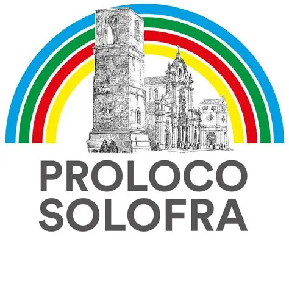

Registrati
Crea gratuitamente il tuo portafoglio digitale con nome, cognome ed email.

AccediCarica il tuo credito, mostra il QR personale e paga velocemente presso gli stand del vino.
Saldo disponibile
20,00 € 10 DiviniMostra questo QR allo stand
Crea gratuitamente il tuo portafoglio digitale con nome, cognome ed email.
Recati alla cassa Indivino e scegli quanti Divini acquistare.
Lo stand scansiona il codice e l’importo viene detratto in pochi secondi.
Il sistema riconoscerà automaticamente il ruolo dopo l’accesso.